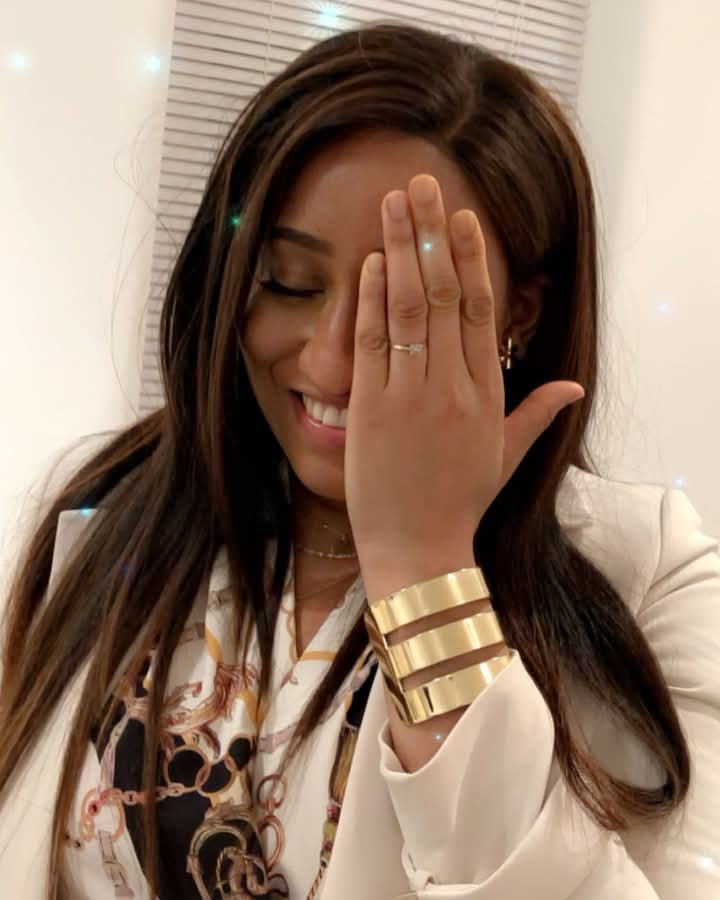
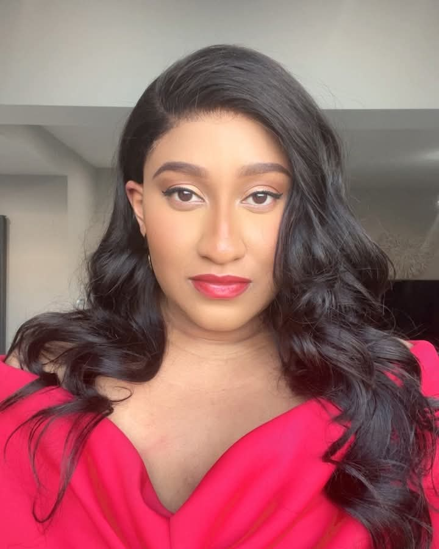
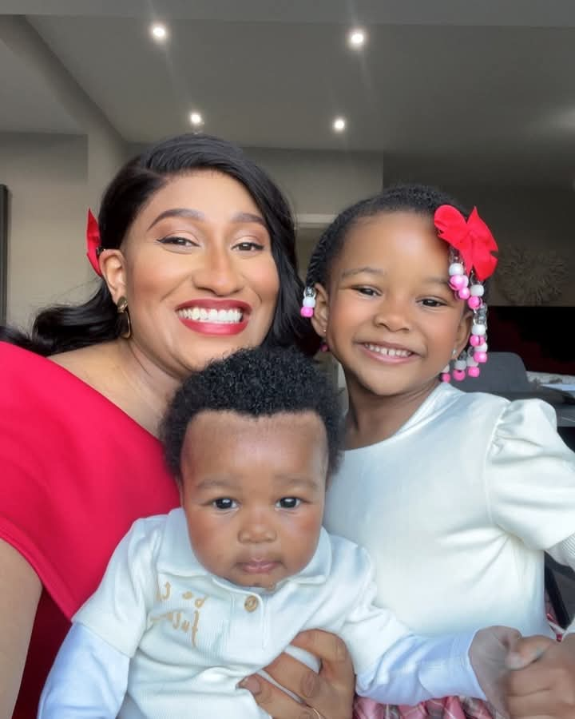
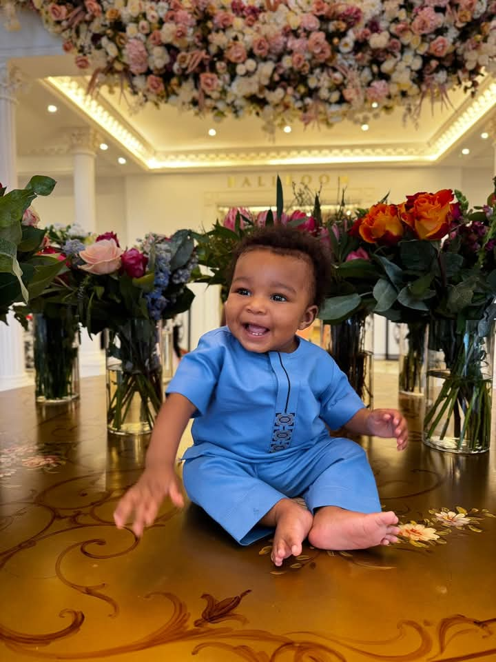
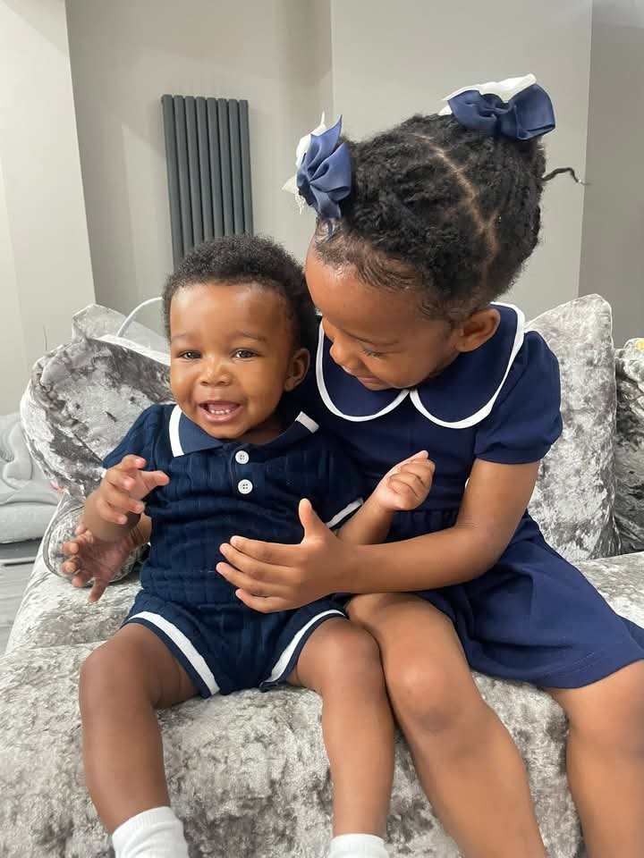
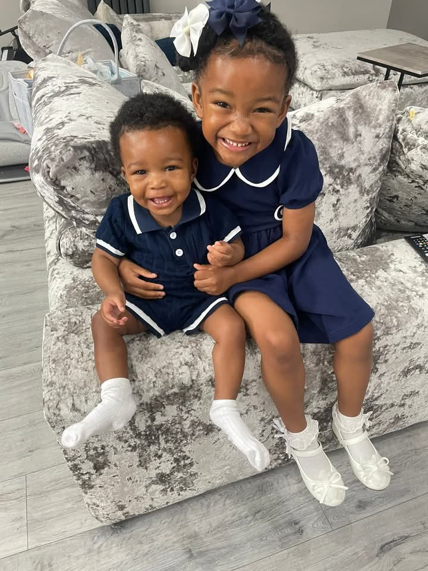
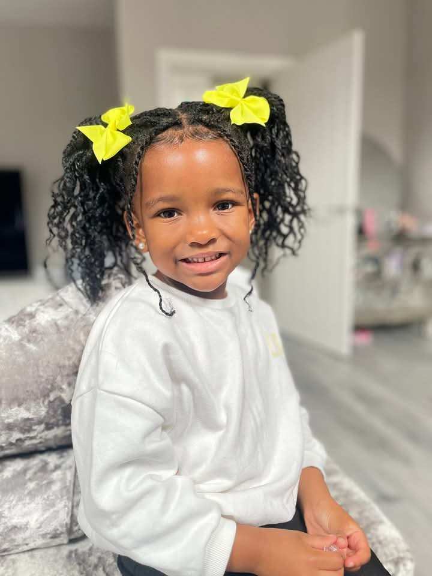
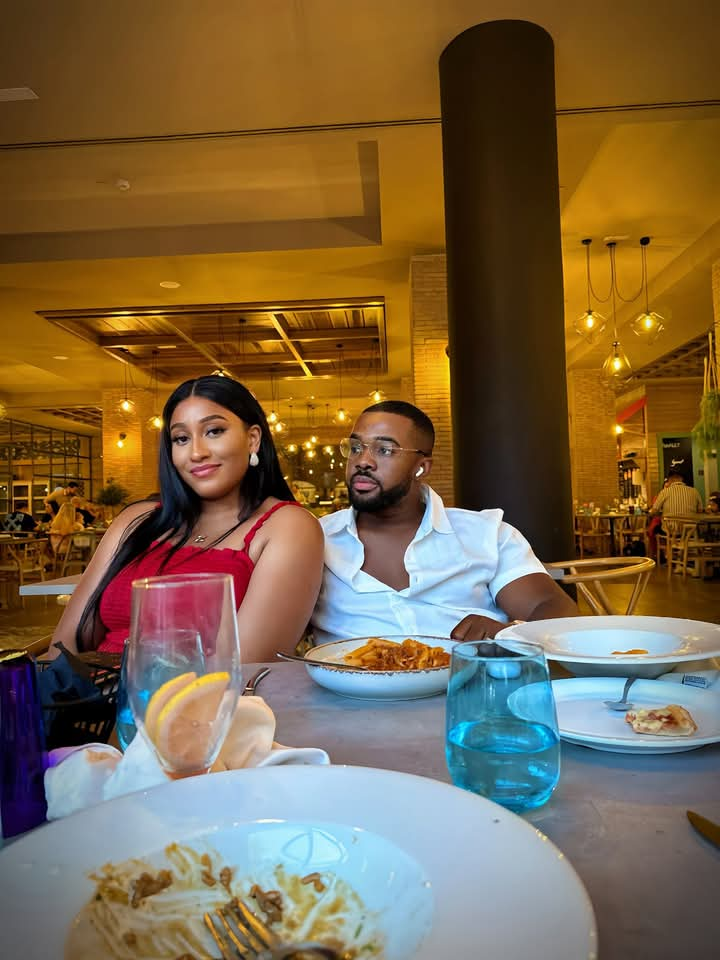
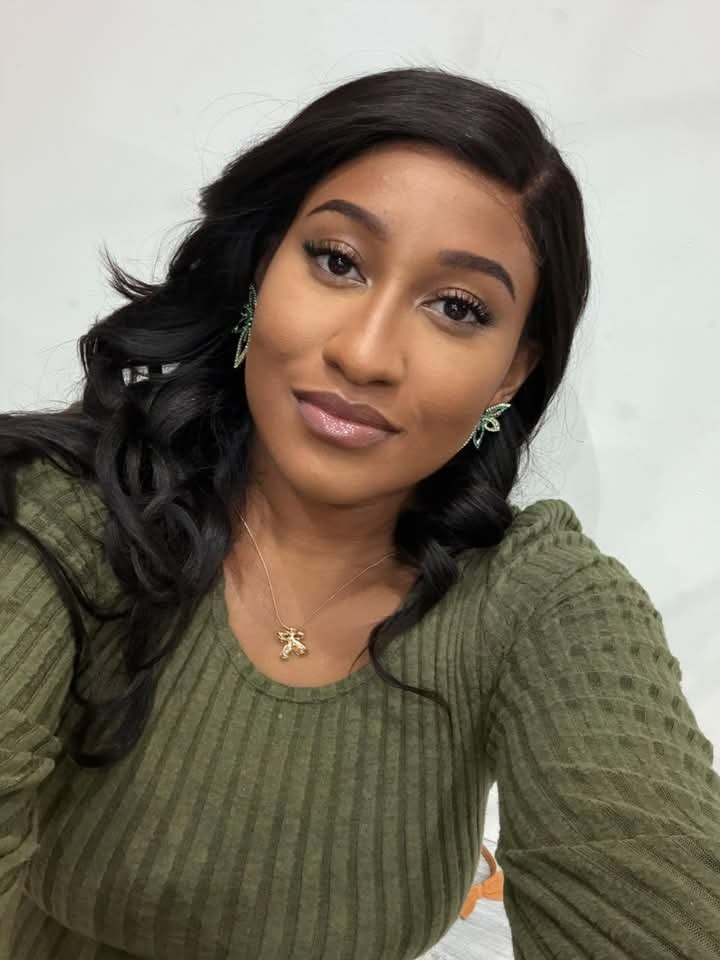
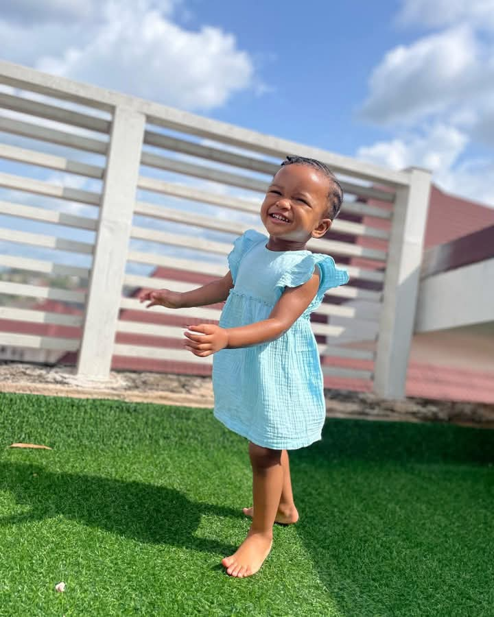
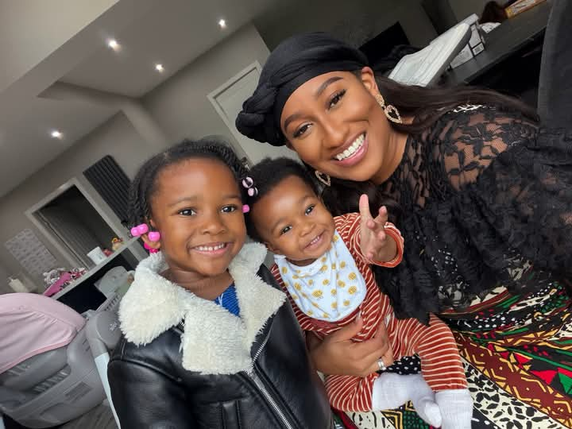
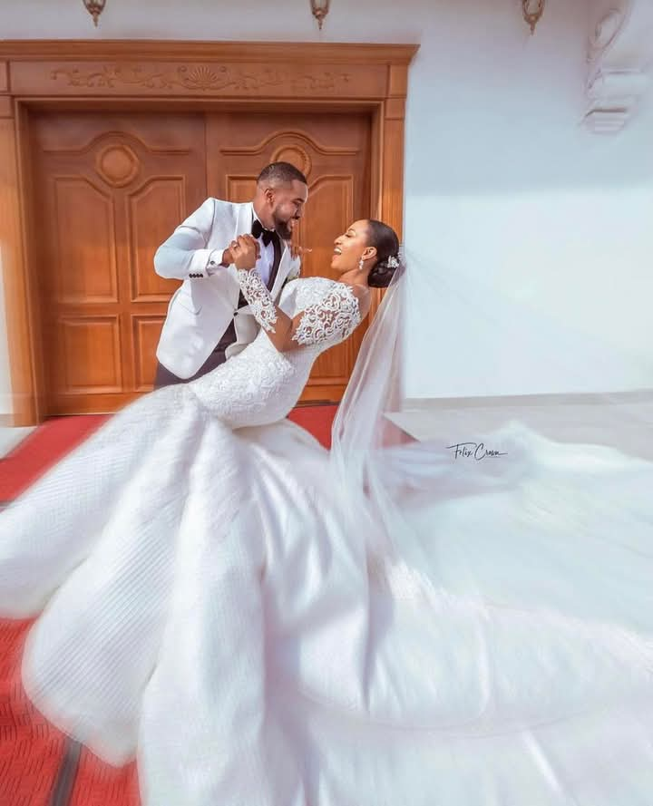
Williams Uchemba is a Nigerian actor, filmmaker, comedian, philanthropist, and entrepreneur known for his strong influence both in the entertainment industry and humanitarian space. Rising to fame as a child actor in Nollywood, he has continued to build an admirable legacy with impactful movie roles, creative projects, and charity initiatives under the Williams Uchemba Foundation.
He is married to Brunella Oscar, and together they share a beautiful family that often inspires many with their values, love, and public influence. Williams continues to use his platform to entertain, educate, and uplift communities across Nigeria and beyond.